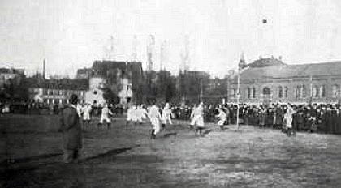
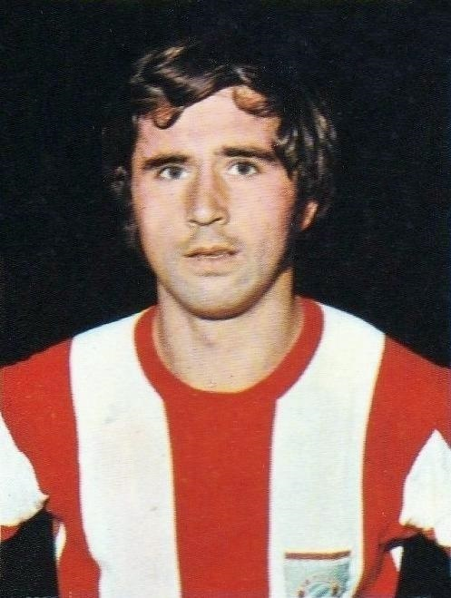
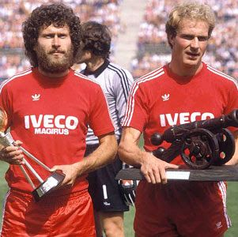
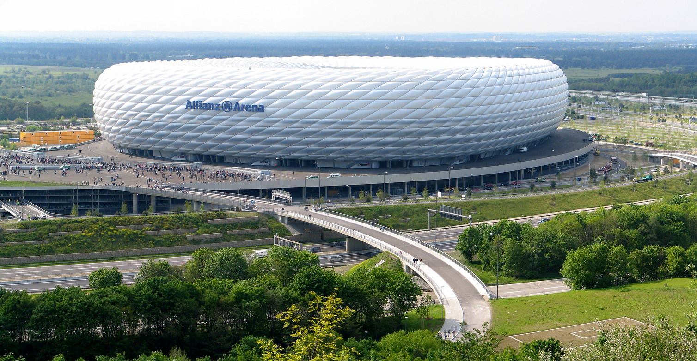
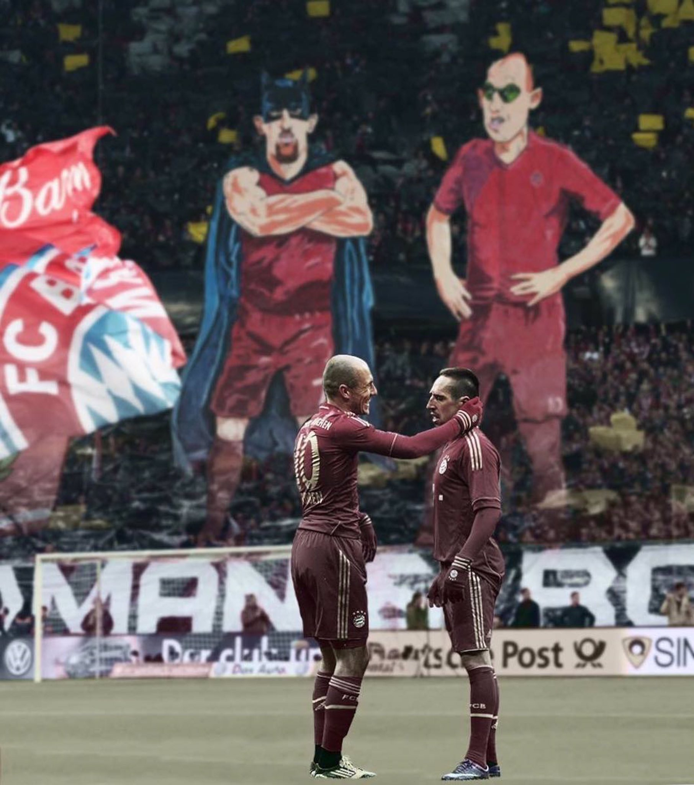
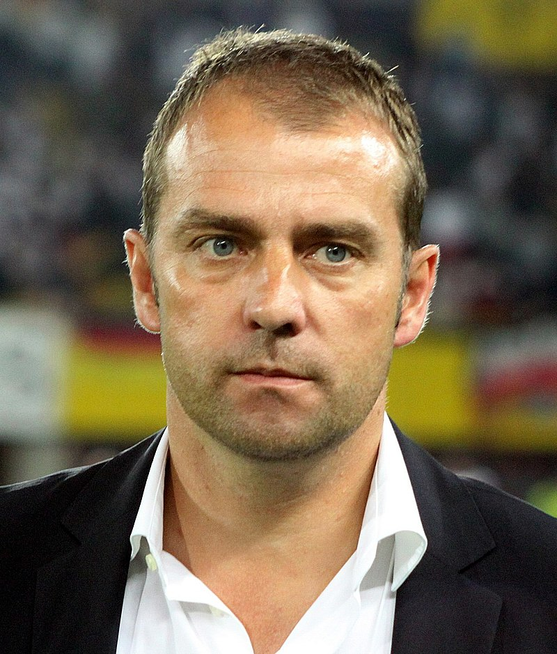

Early years (1900–1965)

FC Bayern Munich was founded by members of a Munich gymnastics club (MTV 1879). When a congregation of members of MTV 1879 decided on 27 February 1900
that the footballers of the club would not be allowed to join the German Football Association (DFB), 11 members of the football division left the
congregation and on the same evening founded Fußball-Club Bayern München. Within a few months, Bayern achieved high-scoring victories against all
local rivals, including a 15–0 win against FC Nordstern, and reached the semi-finals of the 1900–01 South German championship.In the
following years, the club won some local trophies and in 1910–11 Bayern joined the newly founded "Kreisliga", the first regional Bavarian league.
The club won this league in its first year, but did not win it again until the beginning of World War I in 1914, which halted all football activities in
Germany. By the end of its first decade of founding, Bayern had attracted its first German national team player, Max Gaberl Gablonsky. By 1920, it
had over 700 members, making it the largest football club in Munich. On the right we can see the first ever game of Bayern Munich against 1. FC. Nurnberg in 1901.
The golden years (1965–1979)

Although Bayern won its first national championship in 1932, the club was not selected for the Bundesliga at its inception in 1963. The club had its
period of greatest success in the middle of the 1970s when, under the captaincy of Franz Beckenbauer, it won the European Cup three consecutive times
(1974–1976). The rest of the decade was a time of change and saw no further titles for Bayern. In 1977, Franz Beckenbauer left for New York Cosmos and,
in 1979, Sepp Maier and Uli Hoeneß retired while Gerd Müller joined the Fort Lauderdale Strikers. Bayerndusel was coined during this period as an
expression of either contempt or envy about the sometimes narrow and last-minute wins against other teams. On the right we can see Gerd Muller, he is
regarded as one of the greatest players and goalscorers of all time.
FC Breitnigge to FC Hollywood (1979–1998)

The 1980s were a period of off-field turmoil for Bayern, with many changes in personnel and financial problems.
On the field, Paul Breitner and Karl-Heinz Rummenigge, termed FC Breitnigge, led the team to Bundesliga titles in 1980 and 1981.
Apart from a DFB-Pokal win in 1982, two relatively unsuccessful seasons followed, after which Breitner retired and former coach Udo Lattek returned.
Bayern won the DFB-Pokal in 1984 and went on to win five Bundesliga championships in six seasons, including a double in 1986. European success, however,
was elusive during the decade; Bayern managed to claim the runners-up spot in the European Cup in 1982 and 1987.
Jupp Heynckes was hired as coach in 1987, but after two consecutive championships in 1988–89 and 1989–90, Bayern's form dipped.
After finishing second in 1990–91, the club finished just five points above the relegation places in 1991–92. Success returned when Franz Beckenbauer took
over for the second half of the 1993–94 season, winning the championship again after a four-year gap. Beckenbauer was then appointed club president.
His successors as coach, Giovanni Trapattoni and Otto Rehhagel, both finished trophyless after a season, not meeting the club's high expectations.
During this time, Bayern's players frequently appeared in the gossip pages of the press rather than the sports pages, resulting in the nickname FC Hollywood.
Franz Beckenbauer briefly returned at the end of the 1995–96 season as caretaker coach and led his team to victory in the UEFA Cup, beating Bordeaux in the final.
For the 1996–97 season, Trapattoni returned to win the championship. In the following season, Bayern lost the title to newly promoted 1. FC Kaiserslautern and
Trapattoni had to take his leave for the second time
Renewed international success (1998–2007)

After his success at Borussia Dortmund, Bayern were coached by Ottmar Hitzfeld from 1998 to 2004. In Hitzfeld's first season, Bayern won the Bundesliga
and came close to winning the Champions League, losing 2–1 to Manchester United into injury time after leading for most of the match.
The following year, in the club's centenary season, Bayern won the third league and cup double in its history. A third consecutive Bundesliga title
followed in 2001, won with a stoppage time goal on the final day of the league season. Days later, Bayern won the Champions League for the
fourth time after a 25-year gap, defeating Valencia on penalties. The 2001–02 season began with a win in the Intercontinental Cup, but ended trophyless
otherwise. In 2002–03, Bayern won their fourth double, leading the league by a record margin of 16 points. Hitzfeld's reign ended in 2004,
with Bayern underperforming, including defeat by second division Alemannia Aachen in the DFB-Pokal.
Felix Magath took over and led Bayern to two consecutive doubles. Prior to the start of the 2005–06 season, Bayern moved from the Olympiastadion to the
new Allianz Arena, which the club shared with 1860 Munich. On the field, their performance in 2006–07 was erratic. Trailing in the league and
having lost to Alemannia Aachen in the cup yet again, coach Magath was sacked shortly after the winter break.
Hitzfeld returned as a trainer in January 2007, but Bayern finished the 2006–07 season in fourth position, thus failing to qualify for the Champions
League for the first time in more than a decade. Additional losses in the DFB-Pokal and the DFB-Ligapokal left the club with no honours for the season.
Robbery – Robben and Ribery (2007–2019)

For the 2007–08 season, Bayern made drastic squad changes to help rebuild. They signed a total of eight new players and sold, released or
loaned out nine of their players. Among new signings were 2006 World Cup stars such as Franck Ribéry, Miroslav Klose and Luca Toni.
Bayern went on to win the Bundesliga in convincing fashion, leading the standings on every single week of play, and the DFB-Pokal against
Borussia Dortmund. For the 2009–10 season, Bayern hired Dutch manager Louis van Gaal, and Dutch forward Arjen Robben joined Bayern.
Robben alongside Ribéry would go on to shape Bayern's play style of attacking over the wings for the next ten years. The press quickly dubbed the duo
"Robbery". In addition, David Alaba and Thomas Müller were promoted to the first team. With Müller, van Gaal went so far as to proclaim "With me,
Müller always plays" which has become a much referenced phrase over the years. On the pitch Bayern had its most successful season since 2001,
securing the domestic double and losing only in the final of the Champions League to Inter Milan 0–2. Despite the successful 2009–10 campaign,
van Gaal was fired in April 2011 as Bayern was trailing in the league and eliminated in the first knockout round of the Champions League.
Van Gaal's second in command, Andries Jonker, took over and finished the season in third place. Jupp Heynckes returned for his second permanent spell
in the 2011–12 season. Although the club had signed Manuel Neuer, ending Bayern's quest for an adequate substitute for Kahn, and Jérôme Boateng for
the season, Bayern remained without title for the second consecutive season, coming in second to Borussia Dortmund in the league and the cup.
The Champions League final was held at the Allianz and Bayern indeed reached the final in their home stadium, but lost the "Finale dahoam" as they
had termed it to Chelsea on penalties. For the 2012–13 season, Bayern signed Javi Martínez. After Bayern had finished as runner-up to all titles in
2011–12, Bayern went on to win all titles in 2012–13, setting various Bundesliga records along the way, and becoming the first German team to
win the treble. During the season, in January, Bayern had already announced that they would hire Pep Guardiola as coach for the 2013–14 season.
Guardiola stayed at Bayern for three successful years, winning three bundesliga titles, two DFB pokals, a UEFA Supercup and a Fifa Club World Cup but
Bayern failed to advance past the semi finals of the Champions League during his tenure. His successor was Carlo Ancelotti. Under Ancelotti,
Bayern claimed their fifth consecutive league title, but did not win the cup or the Champions League. As Bayern's performances were perceived to be more and
more lackluster, Ancelotti was sacked after a 0–3 loss to Paris St. Germain in the Champions League, early in his second season. Willy Sagnol took over as
interim manager for a week before it was announced that Jupp Heynckes would finish the season in his fourth spell at the club. The club began a long and
extensive search to find a replacement and eventually Niko Kovač was presented as Heynckes's successor, signing a three-year contract.
Kovač's first season at the club started slow with Bayern falling behind Dortmund in the league throughout the first half of the season.
In the Champions League the club was eliminated by Liverpool in the round of 16. On 18 May 2019, Bayern won their seventh straight Bundesliga title
as they finished two points above second place Dortmund with 78 points. This Bundesliga title was Ribéry's ninth and Robben's eighth.
A week later, Bayern defeated RB Leipzig 3–0 in the 2019 DFB-Pokal Final. With the win Bayern won their 19th German Cup and completed their
12th domestic double.
Flick era (2019–present)

Hans-Dieter Flick joined Bayern Munich on 1 July 2019 as an assistant coach. Under Kovač, Bayern was off to a slow start in the league and after a
5–1 loss to Frankfurt, Kovač and Bayern parted ways on 3 November 2019 with Flick being promoted to interim manager. After a satisfying spell as
interim coach, Bayern announced on 22 December 2019 that Flick would remain in charge until the end of season. Bayern's performances on the
pitch picked up noticeably and in April 2020, the club agreed with Flick to a new permanent contract through 2023. Under Flick the club won the league,
having played the most successful leg of a Bundesliga season in history, and went on to claim the cup, thus completing the club's 13th domestic double.
In the Champions League, Bayern reached their first final since 2013, en route beating FC Barcelona 8–2 in the quarter-finals and Lyon 3–0 in the
semi-final. In the final, which was held in Lisbon behind closed doors due to the severity of COVID-19 pandemic, they defeated Paris Saint-Germain 1–0.
Former PSG player Kingsley Coman scored the only goal of the match. With the victory, they became the second European club to complete the
continental treble in two different seasons, matching the 2014–15 FC Barcelona team. After a short break, Bayern started the new season by winning
the UEFA Super Cup for the second time in their history. In a closely contested match, Bayern defeated Sevilla 2–1 after extra time, with Javi
Martínez scoring the winning goal.